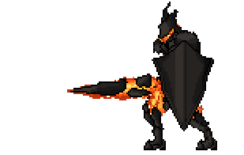
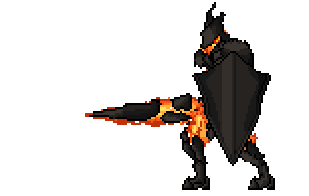
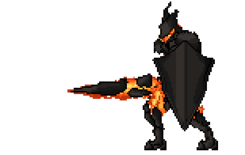
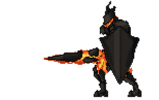
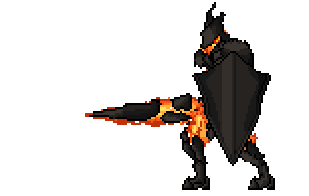
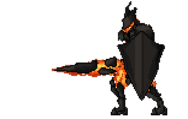

Samira e seus amigos decidem se separar. Floresta a dentro Samira já se depara com um gigante guerreiro ( uma mistura de gigante de armadura e lava). Ele vai em sua direção rapidamente. Pois tenta evitar que ela encontre a Petricita logo atrás dele. Ela decide:
1-Contra-atacar.
2-Desviar de seu golpe.